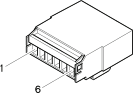

D1B Front / dashboard connection ( FACIA )
- Path
- Electrical equipment > Connectors > D Intermediate couplings > D1 Front / dashboard connection > D1B Front / dashboard connection ( FACIA )
- Kind
- connector pinout (pin -> wire colour -> other end)
- Applies to
- engines: 1.6 TS , 1.8 TS, 2.0 JTS, 2.5 V6, 3.2 V6, 1.9 JTD 8v , 1.9 JTD 16v, 2.0 JTS, 2.4 JTD 10v, 2.4 JTD 20v; production: da 03/02 a 09/03
- Interactive page
- https://sloeber94.github.io/elrnDB-a156/en/#/3235420
Applies to: engines: 1.6 TS , 1.8 TS, 2.0 JTS, 2.5 V6, 3.2 V6, 1.9 JTD 8v , 1.9 JTD 16v, 2.0 JTS, 2.4 JTD 10v, 2.4 JTD 20v; production: da 03/02 a 09/03

Wiring | Colour |
|---|---|
BIANCO (white) |
Topics linked from this page (10)
- 20 FACIA
- B98B Supplementary fuse box ( FACIA )
- D1 Front / dashboard connection
- D20A /Rear dashboard coupling ( FACIA )
- D20B /Rear dashboard coupling ( FACIA )
- D21B Dashboard/air conditioning-heater connection ( AIR CONDITIONING )
- D47 Clock spring coupling
- D90 INFOCENTER / dashboard coupling
- E10A Speedometer ( FACIA )
- E20 Auxiliary instrument
Topics that link to this page (26)
- B98B Supplementary fuse box ( FACIA )
- B98B Supplementary fuse box ( FACIA )
- D1 Front / dashboard connection ( FACIA )
- D1 Front / dashboard connection ( FACIA )
- D1 Front / dashboard connection ( FACIA )
- D20A /Rear dashboard coupling ( FACIA )
- D20A /Rear dashboard coupling ( FACIA )
- D20B /Rear dashboard coupling ( FACIA )
- D20B /Rear dashboard coupling ( FACIA )
- D20B /Rear dashboard coupling ( FACIA )
- D21B Dashboard/air conditioning-heater connection ( FACIA )
- D4 Front/engine connection ( FRONT )
- D4 Front/engine connection ( FRONT )
- D47 Clock spring coupling ( FACIA )
- D47 Clock spring coupling ( FACIA )
- D47 Clock spring coupling ( FACIA )
- D5 Front / ABS couping ( FRONT )
- D5 Front / ABS couping ( FRONT )
- D5 Front / ABS couping ( FRONT )
- D6A Front / rear connection ( FRONT )
- D6A Front / rear connection ( FRONT )
- D6A Front / rear connection ( FRONT )
- D90 INFOCENTER / dashboard coupling ( FACIA )
- E10A Speedometer ( FACIA )
- F10A Left headlamp ( FRONT )
- F10A Left headlamp ( FRONT )